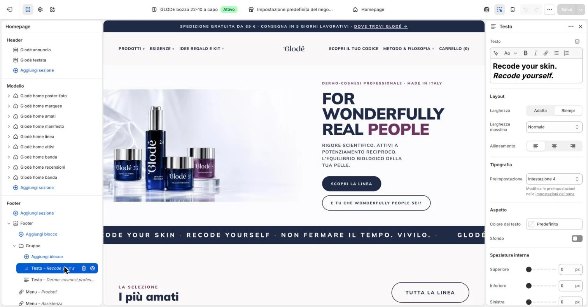

Nella colonna a sinistra, sotto «Footer», aprite «Footer» e poi «Gruppo» con la freccia accanto.

2
Per lo slogan, cliccate il primo blocco «Testo» e cambiate le parole nella casella «Testo» a destra.
Non qui3E il secondo blocco «Testo»?
Contiene i dati legali di Panestetic (indirizzo, partita IVA, REA, capitale sociale): non cambiatelo. Se cambia un dato, scriveteci.
Cosa non toccare?
Solo il testo: non «Layout», «Tipografia», «Aspetto» e «Spaziatura interna». Passando sul blocco a sinistra compaiono il cestino e l’occhio: non cliccateli, toglierebbero o nasconderebbero il blocco.
Per il titolo di una colonna, cliccate il blocco «Menu» e cambiate «Intestazione».